); or if we had multiple reversible reactions at equilibrium. We also note that much of the effort in reformulating the
prior system was expended in deriving a complex relation for – a quantity we need not know in the first place!
); or if we had multiple reversible reactions at equilibrium. We also note that much of the effort in reformulating the
prior system was expended in deriving a complex relation for – a quantity we need not know in the first place!The handling of the high-index complications in the previous example was
relatively straightforward. However, in general, things may be much more conplicated, for instance, if we had non-ideal behaviour (with
chemical equilibrium expressed in terms of fugacities rather than partial pressures, as in ); or if we had multiple reversible reactions at equilibrium. We also note that much of the effort in reformulating the
prior system was expended in deriving a complex relation for – a quantity we need not know in the first place!
One approach to overcoming these difficulties is to try to elimiate from the model. In particular, since occurs only in  and
and  , we can eliminate is by combining these two equations. In this case, we have to multiply by 2 and add it to , which yields:
, we can eliminate is by combining these two equations. In this case, we have to multiply by 2 and add it to , which yields:
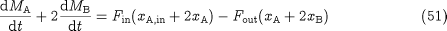
If we now define a new variable:
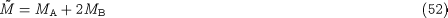
can be written as:
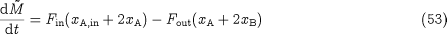
Now consider the DAE system formed by 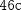 to  , , and . This comprises 8 equations in the 8 unknowns 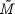, 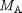, , 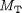,
, , and . This comprises 8 equations in the 8 unknowns 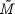, 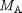, , 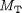,  , , and
, , and  . There is only one differential variable: . If we specify 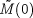, we can:
. There is only one differential variable: . If we specify 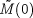, we can:
Calculate  , 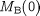,
, 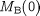,  , 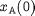, 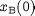 and
, 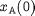, 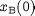 and  by solving , to
by solving , to  and simultaneously. To understand this, remember that
and simultaneously. To understand this, remember that  , and can be combined to yield 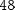 which, together with form a set of two simple equations in and . Once we get these two values, we can calculate from ; and from ; and from .
, and can be combined to yield 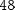 which, together with form a set of two simple equations in and . Once we get these two values, we can calculate from ; and from ; and from .
Calculate from .
Calculate 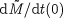 from .
This, then, is an index-1 system which again can be solved with standard algorithms. It is interesting to note that this has been obtained from the original index-2 problem without any differentiations. This would appear to contradict the definition of index (cf.index classification of DAEs). However, the reduction has been possible only because we did not insist on determining all the variables in the original system; in particular, we decided that was of no interest and we eliminated it using purely algebraic manipulations (i.e. no differentiations).
In doing so, we have introduced the new variable defined by equation . has an interesting physical interpretation: it is a quantity that remains unchanged by the reaction 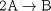, a so called "reaction invariant". Equation can be interpreted as a balance on this quantity; as might be expected this balance does not involve a reaction term.
The procedure described here can be generalised to systems that include multiple reversible reactions at equilibrium, inlcuding additional reversible reactions where the rates of the forward and reverse reactions are known, and additional irreversible reactions. However, this general treatment is beyond the scope of this document.